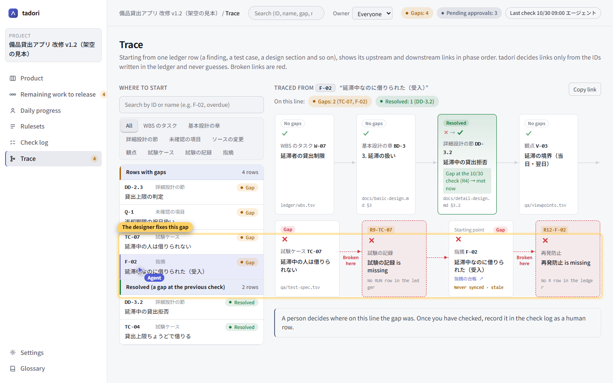
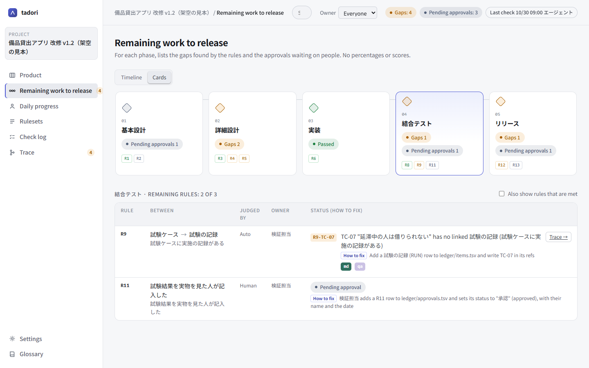

Trace from an acceptance finding to a test case that was never run
Acceptance testing raised a finding: “an overdue user could still borrow”. There was a test case for it, so why wasn't it caught? Tracing upstream from the finding in tadori shows that the test case has no test run.
- Starting point
- Finding F-02 “An overdue user could still borrow (acceptance)”
- Broken links
- Test case TC-07 → no test run (RUN) / finding F-02 → no preventive action (R)
- Also visible
- Detailed design DD-3.2 was a gap in the 10/30 check but is fixed now (resolved)
1. Pick the finding
On the trace screen, pick F-02 from the list on the left. Rows with gaps are grouped at the top. You can also search by ID or title (e.g. “overdue”).
2. Upstream and downstream, in phase order
The chain is laid out as WBS task → basic design chapter → detailed design section → test viewpoint → test case → test run → finding → preventive action. Links are decided only by the IDs written in the ledger — never by guesswork.

3. See where the chain breaks
| Where | What is missing | Rule | Owner |
|---|---|---|---|
| Test case TC-07 “An overdue user cannot borrow” | Test run (RUN) | R9 Every test case has a test run | Tester |
| Finding F-02 | Preventive action (R) | R12 Every finding has a preventive action | PM |
TC-07 was created from test viewpoint V-03 “Overdue boundary (due date, day after)”, but there is no record of it being run. Rather than a test that existed but failed to catch the problem, it was most likely never run — this gives a person what they need to make that call.
4. Run the test and link the record
On the remaining work screen, a qa icon appears next to TC-07 (once the git-qa URL template is configured). Click it to run that case in git-qa, and link the test record (run.json) as a RUN row in the ledger. Pass or fail is written by the person who saw the real thing.

5. Share a URL in the meeting
A URL like #trace-F-02 shares the same chain, already open. Deciding where along this chain the gap was is up to people. Once confirmed, record it as a human row in the check log.